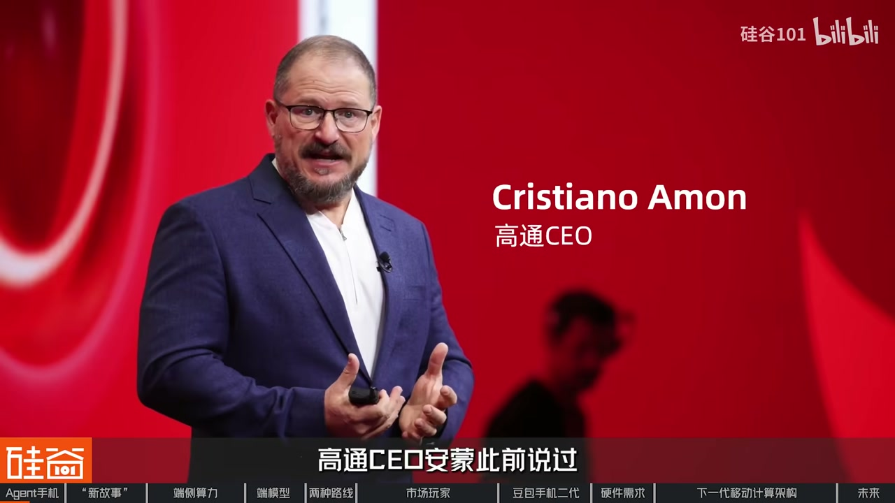
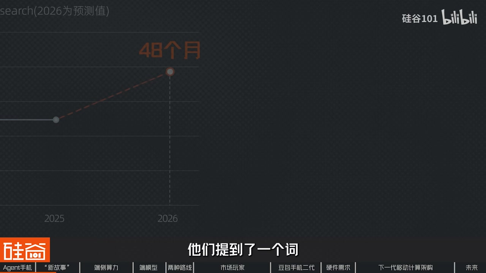
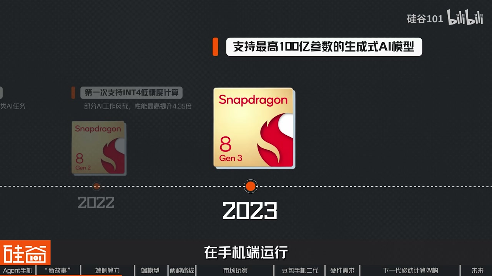
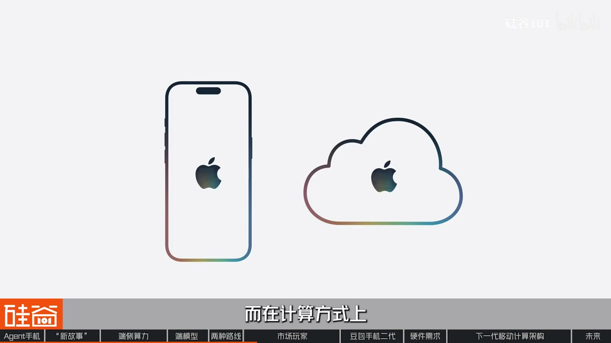
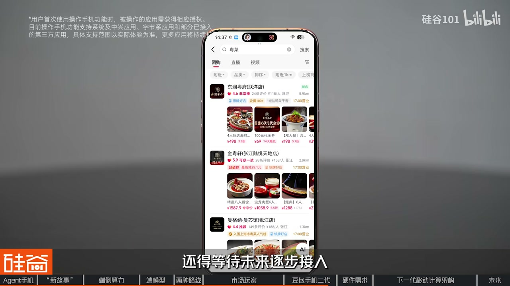
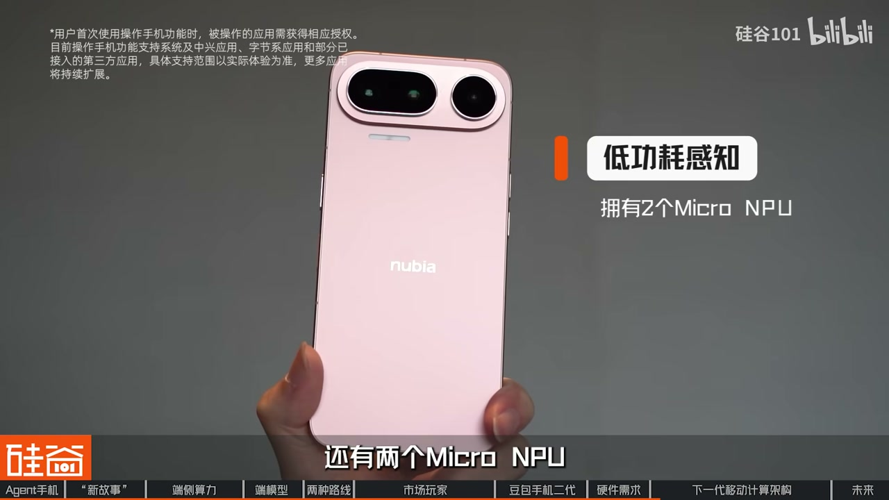
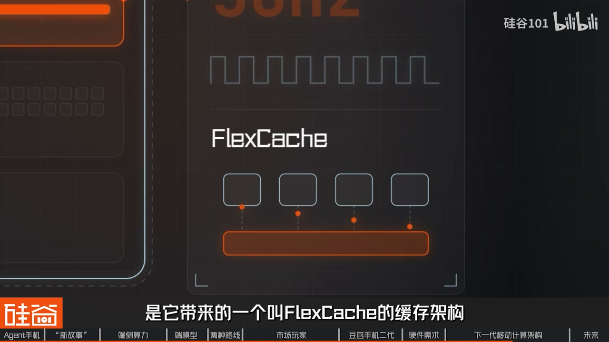

内容要点
三股力量：换机刺激枯竭、端侧 AI 就绪、模型变小+端云协同。行业分叉为系统级 Agent 与超级入口；苹果/谷歌/OpenAI 与国内备案落地并行。硬件要点是低功耗感知、异构调度、端云协同与缓存共享。
知识结构
折叠屏热闹之外，换机周期→48 月；Agent 把「等人操作」变成「替你办事」。
NPU/小模型/端云协同具备；整机嵌入 vs Super App 入口。
苹果/谷歌/OpenAI；nubia 跨 App 后台执行；FlexCache 与三加速器。
下一轮入口之争不只是镜头参数，而是谁成为最懂用户、最值得信任、能替用户办完事的 Agent。
00:00-03:20手机需要新刺激：Agent 之年
开场并置折叠屏硬件秀与存储涨价收缩中低端，但更前沿的是 AI Agent 手机：过去十几年交互几乎没变，若手机开始替你完成任务，叙事就变了。高通称 2026 是 Agent 之年；阶跃星辰、荣耀 Robot Phone、努比亚 NaviX Ultra（豆包助手）与硅谷巨头同时加压。
第一股力量是换机理由枯竭：Counterpoint 显示全球换机周期从约 43 个月向 48 个月靠拢，代际感知差缩小。厂商需要 Agent——订餐不再自己跳 App，而是一句话完成搜索比较预订，手机从工具变助理。


03:20-08:00算力/模型就绪，行业分叉
第二股力量是端侧算力：从骁龙早期 AI Engine、拍照语音固定任务，到 8 Gen2 的低精度与 Transformer 优化、8 Gen3 宣称端侧百亿参数，再到至尊版把个人知识图谱与 Agent 写进目标——芯片一步步为本地大模型与记忆准备。
第三股是模型变小与端云协同：同等智能所需参数下降，本地预处理+云端规划降低延迟与隐私暴露。条件齐备后问题变成：谁定义操作方式？整机 Agent（系统里嵌助手，如 NaviX+豆包）体验直接；Super App（先进入 ChatGPT/豆包/Gemini 再调服务）落地更快、厂商改造 OS 压力更小。两边都在找平衡。

08:00-20:03产品体验、备案与异构算力
苹果把 Siri 往系统级 Agent / Intelligent Personal Hub 推，端侧+私有云，体验统一但生态开放有限、迭代曾慢于预期。谷歌 Gemini 既像系统 Agent 又像 Super App，服务链完整，却要在分散 Android 与第三方权限里稳定跨 App 执行。OpenAI 与 Jony Ive 硬件合作仍偏终端层探索，量产时间表靠后。
国内端侧大模型备案后，智能体手机进入有监管落地阶段。nubia 演示：AI 键唤醒、授权后跨 App、虚拟屏后台跑、可记忆行程——理解规划执行链路已通，但第三方 App 覆盖仍早期，类似自动驾驶先铺底层再迭代。
硬件三要求：低功耗感知待命、CPU/GPU/NPU 异构无短板、端云协同控延迟。新骁龙强调共享缓存（任务切换不丢上下文）、GPU 内 AI、NPU 向量/标量与近端内存、MoE 多精度——为多步骤 Agent 服务。竞争焦点：谁成为最值得信任的入口 Agent。




完整转录（552段）
Whisper 转录；已校正：智能体、阶跃星辰、高通安蒙、INT4、Gemini、Jony Ive/LoveFrom、异构计算、FlexCache 等。
最近手机大战又打响了
苹果正式进入折叠屏
三星把折叠屏拆成多种形态
小米展示了18 Fold
与此同时存储芯片价格持续上涨
推动整个行业进入新一辆周期
并迫使厂商进一步收缩中低端产品线
但是更前沿也更让人关注的是
AI智能体手机 AI Agent Fold
过去十几年手机一直在变得更强
摄像头越来越多
芯片越来越快
但是我们操作手机的方式
几乎没怎么变
但如果有一天手机不再等你操作
而是直接替你完成事情呢
2026年这件事突然开始加速了
高通CEO安蒙此前说过
2026是Agent之年
我们也看到今年7月
阶跃星辰发布了AI手机StepX Neo
荣耀发布了Robot Phone
还有最近努比亚发布了nubia NaviX Ultra
搭载了新版豆包手机助手消费者版
是官方认证的全球首款AI智能体手机
而在硅谷 苹果
五个OpenEye纷纷下场发力
一时间AI手机市场热闹了起来
Hello 大家好
欢迎收看硅谷101
我是陈茜
那么这期视频呢
我们就想聊聊手机的下一步在往哪里走
行业里面正在出现如何的变果
为什么手机厂商开始压住Agent
像努比亚nubia NaviX Ultra这样的产品上手体验如何
以及智能体手机
真的是AI硬件的未来吗
那为什么最近手机厂商都来压住智能体手机了呢
这背后其实是有三股力量汇聚在了一起
第一呢
是传统手机行业需要新的换机理由了
过去几十年
智能手机的升级逻辑非常清楚
屏幕越来越大
摄像头越来越多
处理器越来越快
电池越来越持久
每隔一两年总会有一个明显的硬件升级
让消费者觉得这台手机是一个优秀的手机
但最近几年这种刺激正在明显变弱
CounterPoint的数据显示
全球智能手机换机周期已经明显拉长
2023和2024年这个数据都是在43个月左右
到了2026年
CounterPoint最新判断是
受存储芯片等零部件价格上涨影响
全球换机周期正在向48个月
也就是四年靠拢
在分析换机周期拉长的原因是
也就是新手机和上一代手机之间的差距
消费者越来越感知不到了
所以对于厂商们来说
他们急需去找到一个新的刺激点
来重新点燃大家的购买欲望
当然就是AI了
更准确的来说是Agent智能体
过去几年
CounterPoint的优秀手机的优秀性
也都在增加了
这些优秀手机的优秀性
也都在增加了
智能体
过去几年
手机AI功能已经越来越多
但是Agent带来的想象空间是完全不同的
比如之前想订一家餐厅
你可能需要打开手机地图搜索餐厅
看评价 查时间
再跳转到订餐平台
而在智能体时代
你只需要告诉手机
帮我找一个离我近一点
适合两个人吃饭
今晚7点还有位置的餐厅
那后面的搜索 比较 预定
都可以由Agent来完成
那这样一来
手机的角色就彻底变了
从等人操作的工具直接变成了
能够替你办事的智能助理
而这对于手机厂商来说
可能就是下一轮
换机周期所需要的新故事
那我收到的第二股力量就是算力
端侧AI从能用进入到了好用
开始能够支撑这个新故事的落地
以前手机上的AI
主要还是语音识别 图像识别
拍照算法等相对固定的任务
任务不复杂
模型也不大
NPU针对性的优化一下也就够了
但是Agent要进入手机之后
任务的复杂程度大大提高
它可能会涉及语音 文字 图像
AI推理 操作等一系列的事情
手机不仅需要大量的计算
CPU GPU NPU
以及其他专用计算单元
还要围绕着任务进行动态的切换与协同
端侧AI能力就成为了关键问题
在过去几年的时间中
手机芯片正在针对性的解决这个问题
我们翻了一下骁龙的叠外记录
发现AI计算是从早期的一个辅助能力
已经逐渐变成了SOC中的核心能力
早在2015年
高通的骁龙820就搭载了第一代Qualcomm AI Engine
芯片开始帮助处理影像 语音和传感器上的AI任务
2018年的骁龙855又给它加进了张量加速器
不过这时候的AI干的还是拍照 语音这类固定活
真正的转折
在2022年底的骁龙8Gen2
这一代第一次支持INT4低精度计算
也专门针对Transformer做了优化
高通公布的数据显示
在部分AI工作负载上
性能最高提升4.35倍
从这一代开始
手机芯片开始为本地跑大模型做准备了
2023年的骁龙8Gen3更是宣布
支持最高100亿参数的生成式AI模型在手机端运行
到去年骁龙峰会发布的第五代骁龙8至尊版
高通第一次把手机上的智能体写进了设计目标
NPU相比上一代提升37%
同时加入了个人素级
Personal Scribe
个人知识图谱
Personal Knowledge Graph的能力
这两个东西的作用就是让端侧的Agent能够记住你
能够持续学习
你看看这个节奏
从帮拍照到算神经网络
然后能够跑大模型
再到现在开始有记忆
芯片厂商其实是一步一步在往Agent这个方向挪
只不过前几年没有人把这个词儿呈挂在嘴边
不过芯片跑得快还不够
你还得有一个真的能够塞进手机里面的模型
云端的大模型参数动辄上千亿
无论如何是塞不进一块手机里的
所以过去很长一段时间
大模型和手机几乎是两个世界的事儿
但是这两年
这两个世界开始快速的靠近
一方面模型本身正在快速的变小
高通全球副总裁徐浩博士
就在我们之前的采访中就表示说
同样的智能需要的参数是越来越少了
比如说我们做过一个研究
在2024年最好的拉玛出来的一个模型
比如说它的Performance
它的表现能够到某一个数量级
在几个月小于一年的时间内
这个一百多个billion或者几百billion的这些model
它用很小的模型
比如四个billion或者几十个billion的
它就能达到同样的效果
在另外一方面端云协同的架构
也让agent在手机上的能力
有了更大的发挥空间
随着需求、算力、模型这三股力量
是汇聚到一起之后
AI智能体手机需要的基本条件
就已经具备了
这个时候问题也就出现了
当AI开始替用户操作手机之后
谁来决定它应该怎么操作
这也就是目前行业正在分岔的地方
那目前行业里主要有两条不一样的思路
第一种思路可以理解成整机agent
你打开手机
看起来还是我们熟悉的样子
常用的APP都不少
而AI功能被集成到了系统里
市中路线最大的优势是体验足够直接
那我们这次体验的Nubia NaviX Ultra
搭载的豆包手机助手
和骁龙旗舰移动平台
就是走的这条路线
具体体验呢
咱们后面来慢慢聊
而第二种思路呢
就是在手机里面放一个super app
也就是超级AI入口
用户先进入一个AI APP
比如说ChatGPT豆包Gemini等等
然后呢
由它去调用地图购物外卖等各种服务
这种路线的优势是落地相对容易
手机厂商呢
不需要一下子重构整个操作系统
只需要能先把AI入口做好
再不断增加它能够调用的服务
用户的学习门槛也不需要太多
用户的学习门槛也会比较低
网页现在呢
其实是在两个方向的探索
都在进行
也在寻找平衡和突破
我们先来看看硅谷这一边的一些动作
首先呢就是最近刚召开发布会的苹果了
最近苹果刚刚发布了iPhone 18系列
从今年的WWDC开始
苹果最大的变化之一呢
就是正在把Siri
从只会回答问题的助手
往系统及agent推进
在今年的发布会中
苹果甚至在开场就直接提出了
Intelligent Personal Hub这个概念
把新一代iPhone描述成智能个人中书
而在计算方式上
Apple Intelligence也继续采用端侧处理
加私有云计算相结合的方式
能够在设备上完成的
尽量放在设备上
需要更强能力的时候
再交给苹果的云端
它的好处是体验比较容易统一
但是相应的
它对第三方生态的开放程度相对有限
很多AI能力需要在苹果自己的规则
和框架下去运行
这带来的潜在问题
可能就是迭代速度会慢一些了
你看这几年苹果AI的推进
一度是落后于市场预期的
那另一边
谷歌的路线有点不同
它看起来是在做Android系统及agent
但是从它背后的生态来看
又非常像一种Super App
因为谷歌手里面本身就有一条
非常完整的服务体系
所以当Gemini进入Android之后
它同时获得了两个优势
一方面它可以深入操作系统
理解用户正在做什么
另一方面
它自己又拥有大量可以直接调用的服务
不过谷歌的优势同时
也是它最大的难题
用户真正使用的手机
要使用的远不止有谷歌的这些服务
当agent开始跨APP执行任务
就需要不同的第三方应用开放权限
缺口和执行能力
再加上Android设备众多
不同厂商的硬件、系统和权限机制都有差异
所以Google可能要解决的问题是
如何让Gemini在一个开放、庞大
又高度分散的Android生态里
稳定地替用户把事情做完
当然硅谷还有一类新玩家
比如说OpenAI
2015年5月
OpenAI宣布与前苹果首席设计师
Jony Ive的设计公司LoveFrom合作
并收购其硬件团队io products
一开始Ive和Symmotron设想的
是希望摆脱屏幕加APP的交互方式
甚至一度设想为没有屏幕的设备
有消息称
OpenAI的产品设计
可能还会是基于传统智能手机的形态
目标在2027年的上半年量产
那硅谷现在的探索
更多还是集中在系统层和终端层
而在中国市场
厂商的打靶则是更加的多样化
也更热闹了
今年7月
网信办第一次集中公布了
端侧大模型的备案信息
苹果小米OPPO Vivo华为三星努比亚
7家主流厂商全部完成了
端侧AI深层式服务的备案
那这也意味着智能体手机在国内
已经从厂商自己的产品探索
逐渐进入到有备案有监管的落地阶段
在这当中
努比亚的做法有点特别
他走的是整机 Agent路线
那他的体验如何呢
我们先来聊聊
努比亚nubia NaviX Ultra相比
传统智能手机
感受非常不一样的起点
但第一个变化最直观
有一些APP的操作
在获得授权之后
我就不用自己动手了
过去我们想做什么事
得点开对应的APP
然后逐步的搜索 翻页 查询
而到了智能体手机上
只要长按独立的AI键
输出我的要求
它就会在获得授权之后
自动帮我操作
第二是执行能力提升
它可以跨APP操作
具体转分三步
在感知方面
豆包手机助手
拥有全局独屏的能力
比如说刷视频的时候
可以直接问
屏幕中的内容是什么
在哪里
不需要再截图
单独打开AI软件去问
在推理方面
对于一些
需要其他APP协助的人物
它能自动换取对应的APP
不需要我再手动打开
更重要的是执行方面
它可以在后台的
虚拟屏幕上跑
画面不占用主屏
我可以同时做其他事
第三就是记忆能力
只要我授权了
或者主动告诉他一些信息
他就能够帮我记住
比如说我的行程跳价
当我需要的时候
可以直接问豆包
不再需要打开APP去寻找
这些体验加起来
就构成了
AI原生交互的一个范式
我们的采访嘉宾徐浩
就认为AI
将会重构交互体验
它是个全新的一个
User Interface
从我们选APP到不用选APP
这些都是我们的
慢慢的我们会适应的一些
用户体验
以及交互方式的转变
当然作为一个全新的品类
这种比手机的体验
还有很多的提升空间
我们试用的时候发现
现在各种流畅的体验
主要是围绕系统应用
中心还有字节系的APP上
想调用更多第三方APP的话
还得等待未来逐步介入
不过从基础角度上来看
这套理解规划执行的
完整链路已经跑通了
这就像自动驾驶行业早期的状态
先把技术底层搭好
那接下来更重要的是
到真实的商业环境里
去反复验证和迭代
这些复杂的能力
在手机上要跑得好
还要跑得久
底层硬件需要什么样的支持呢
那首先Agent要随时待命
但是如果芯片一直全功率运行
电量就撑不了多久
这就需要低功耗感知
第二点硬件要能够更好地支持多任务
并行调度
过去CPU GPU NPU
各自承担比较明确的任务
但是到了Agent上
又是任务调度
又是推理计算
后台还得渲染操作界面
这些任务需要在不同的计算单元之间
高效切换
每一块都不能有短板
而且手机上的算力毕竟是有限的
这就要收到第三个要求
那就是云端与本地的协同
我们在手机端侧
我们会做预处理
就把有个人的信息
做一个简化和这个压缩
做一个local memory
就是本地的一个存储
如果我要做一个大的规划
如果手机上能做
那我们就在手机上能做出来
如果手机上不能做
那规划我们可以把它放到云端
我给它提供某些信息
然后云端做出规划
然后再传回来
端云协同的时候
最影响体验的就是延迟
而且智能体的计算不是集中式的
那这也更考验分布式动态调度的能力
那把这几条换在现实里面对照一下
我们已经走到哪一步了呢
那可以说基础框架已经搭好了
但是未来更加值得期待
拿我们手上这台Nubia NaviX Ultra来说
它用的是骁龙旗舰移动平台
针对前面说的低功耗感知
还有两个micro MPU
行时就盯着语音唤醒和运动状态
功耗压得很低
只有需要AI干重活的时候
才会唤醒主NPU
至于多任务调度
它的思路是异构计算
把不同的活交给最适合的单元
我们这里面加个包括CPU
GPU
NPU
所以它的每个的功能不大一样
就是CPU它主要是管控制
然后我们大部分的算力
实际上是在NPU上面
所以NPU它能够把AI的这些运算
能够在降低功耗的情况下
能够做到极致
NPU最大的一个优势是
它是定点的
所以它是为AI来量身定造的
做一个最节能的一个方式
CPU它大部分的说是它比较灵活
但是它的能耗会更高
所以我们这个易购的架构的话
可以把每一个硬件的部分
都能够用到它的特长
那些端侧确实搞不定的
就利用5G的低延迟链路
去和云端协同
让我们有非常强大的5G连接
把这个数据传到云端
让云端做完训练再传回来
所以这些所有的这些解决方案
都是统一的一个解决方案的一部分
这么看来智能体手机的硬件需求
已经基本上满足了
为什么说是基本呢
毕竟今年agent概念才刚刚开始落地
随着AI能力的增长
虽然利益的需求还会不断的提升
但我们再来看看移动芯片行业
将会属何去应对
比如说高通
刚刚举办了2026骁龙峰会
发布了新一代双旗舰移动平台
国内方宣称是专为智能体时代设计的
旗舰移动平台
那第一块是CPU
单从参数上来看
主频是达到了5GHz
但比主频更值得说的是
它带来的一个叫FlexCache的缓存架构
简单解释一下
就是让不同的计算核心
共享同一个缓存池
并且可以根据任务负载动态调整分配
因为agent的工作方式是
一个警球进来
被拆成一串子任务
这些子任务要在不同的核心之间轮流跑
传统的架构下
任务每切换一次核心
数据就可能要重新从内存里加载一遍
而FlexCache让大家共用一个缓存池
任务交接的时候数据还在原地
就不用从头再来
这样带来的好处就是可以支持智能体
保留更长的上下温
更快的响应速度
延迟更低
那第二块是GPU
这次的思路是让GPU自己也具备AI能力
新发布的Adreno neural fusion
是把AI加速直接放进图形管线里
另外还加了一组专门跑AI的GPU核心
叫Adreno matrix course
用来做AI超分
真深层和transformer计算这类事儿
第三块就是NPU
这里主要是两项更新
首先是专门transformer优化的element accelerator
里面有两组单元
向量计算单元
负责高吞吐量的AI数学计算
就是让运算更快
还有就是标量计算单元
负责决策逻辑路由和编排
让推理更准确同时功耗更低
另一个是大容量共享内存
让模型状态
上下温和KV cache
能存在离加速器更近的地方
这样智能体在多个工具和任务之间切换的时候
不用每次都从头加载
另外它还支持MoE混合专项模型
以及从INT2到FP16的多种精度策略
在执行任务时谁擅长谁上
让简单任务审点
复杂任务效果更好
所以接下来行业的动向是
让NPU CPU GPU三条线上都有AI加速
这恰好是agent这种多步骤任务最看重的东西
好了那我们这个视频呢
说了这么多的agent风
智能体手机的底层技术升级
和正在推出的一些产品范式的变化
其实呢在这背后是AI浪潮来临之际呢
是场对下一代交互体验的畅想
说实话手机对人们现在来说实在是太重要了
无论是看小说的老年人
还是刷社媒的Gen Z
也或是同时好几部手机
把他们当移动电脑的上班族
这样形态的硬件呢
已经成为我们生活和工作的必不可少
而如此由移动互联网形成的紧密关系
正在AI的加持下
面临一次巨大的升级
从我来操作到它替我完成
而当这个变化真正发生的时候
下一代手机的竞争
可能也就不再只是参数镜头和芯片的竞争了
谁能成为离用户最近
最懂用户
也最值得用户信任的那个agent
可能才是下一轮移动计算真正的入口之争
那以上就是这些视频的全部内容了
欢迎你们的留言点赞还有转发
是支持我们硅谷101做好深度科技和商业内容的最佳动力
那我是陈茜
我们下期再见了
bye